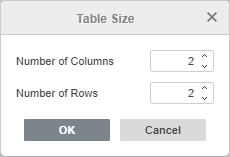
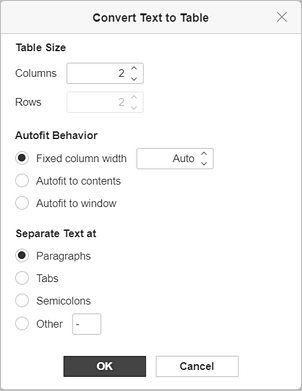
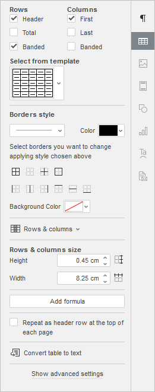
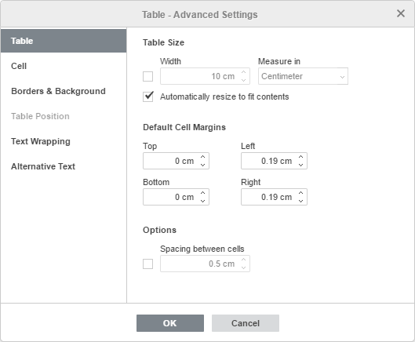
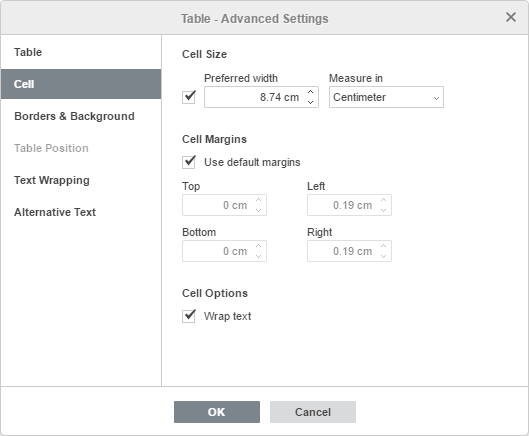
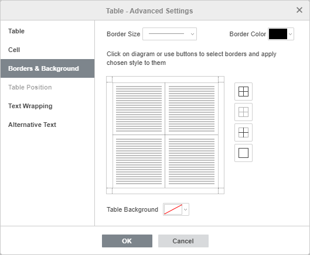
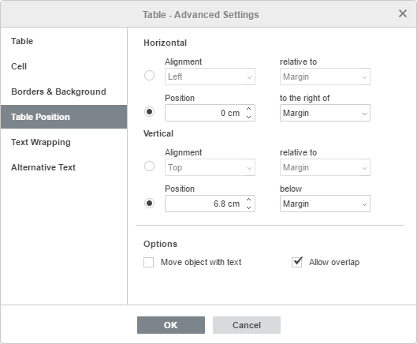
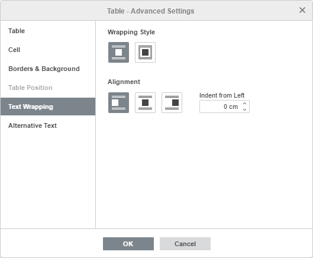
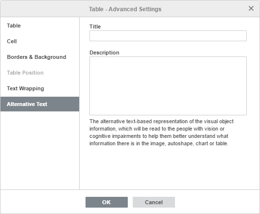

Umetanje tabela
Umetanje tabele
Da biste umetnuli tabelu u Document Editor-u,
- postavite kursor na mesto gde treba dodati tabelu,
- pređite na karticu Insert na gornjoj traci sa alatkama,
- kliknite na ikonu Table na gornjoj traci sa alatkama,
- izaberite opciju za kreiranje tabele:
ili tabelu sa unapred definisanim brojem ćelija (maksimalno 10 × 8 ćelija)
Ako želite brzo da dodate tabelu, samo izaberite broj redova (najviše 8) i kolona (najviše 10).
ili prilagođenu tabelu
Ako vam je potrebna tabela veća od 10 × 8 ćelija, izaberite opciju Insert Custom Table koja će otvoriti prozor u kome možete uneti potreban broj redova i kolona, a zatim kliknite na dugme OK.

- Ako želite da nacrtate tabelu pomoću miša, izaberite opciju Draw Table. Ovo može biti korisno ako želite da kreirate tabelu sa redovima i kolonama različitih veličina. Kursor miša će se pretvoriti u olovku . Nacrtajte pravougaoni oblik na mestu gde želite da dodate tabelu, zatim dodajte redove crtanjem horizontalnih linija i kolone crtanjem vertikalnih linija unutar granica tabele.
-
Ako želite da pretvorite postojeći tekst u tabelu, izaberite opciju Convert Text to Table. Ova funkcija može biti korisna kada već imate tekst koji želite da rasporedite u tabelu. Prozor Convert Text to Table sastoji se od 3 odeljka:

- Table Size. Izaberite potreban broj kolona/redova u koje želite da rasporedite tekst. Možete koristiti dugmad sa strelicama gore/dole ili uneti broj ručno preko tastature.
- Autofit Behavior. Izaberite potrebnu opciju za način uklapanja teksta: Fixed column width (podrazumevano je Auto. Možete koristiti dugmad sa strelicama gore/dole ili uneti broj ručno preko tastature), Autofit to contents (širina kolone odgovara dužini teksta), Autofit to window (širina kolone odgovara širini stranice).
- Separate Text at. Izaberite potrebnu opciju za tip razdvajača u tekstu: Paragraphs, Tabs, Semicolons i Other (unesite željeni razdvajač ručno).
- Kliknite na OK da biste pretvorili tekst u tabelu.
-
Ako želite da umetnete tabelu kao OLE objekat:
- Izaberite opciju Insert Spreadsheet.
- Pojaviće se odgovarajući prozor u kome možete uneti potrebne podatke i formatirati ih koristeći alate za formatiranje iz Spreadsheet Editor-a, kao što su izbor fonta, tipa i stila, podešavanje formata brojeva, umetanje funkcija, formatiranje tabela itd.

- Zaglavlje sadrži dugme Visible area u gornjem desnom uglu prozora. Izaberite opciju Edit Visible Area da biste odabrali oblast koja će biti prikazana kada se objekat ubaci u dokument; ostali podaci se ne gube, već su samo sakriveni. Kliknite na Done kada završite.
- Kliknite na dugme Show Visible Area da biste videli izabranu oblast koja će imati plavu ivicu.
- Kada završite, kliknite na dugme Save & Exit.
- kada je tabela dodata, možete promeniti njena svojstva, veličinu i poziciju.
Da biste promenili veličinu tabele, postavite kursor miša preko hvataljke u donjem desnom uglu tabele i prevucite je dok tabela ne dostigne željenu veličinu.
Takođe možete ručno promeniti širinu određene kolone ili visinu reda. Postavite kursor miša na desnu ivicu kolone tako da se kursor pretvori u dvosmernu strelicu i prevucite ivicu ulevo ili udesno da biste podesili potrebnu širinu. Da biste ručno promenili visinu jednog reda, postavite kursor miša na donju ivicu reda tako da se kursor pretvori u dvosmernu strelicu i prevucite ivicu nagore ili nadole.
Da biste premestili tabelu, držite hvataljku u gornjem levom uglu i prevucite tabelu na željeno mesto u dokumentu.
Takođe je moguće dodati natpis tabeli. Više informacija o radu sa natpisima za tabele možete pronaći u ovom članku.
Izbor tabele ili njenog dela
Da biste izabrali celu tabelu, kliknite na hvataljku u njenom gornjem levom uglu.
Da biste izabrali određenu ćeliju, pomerite kursor miša na levu stranu željene ćelije tako da se kursor pretvori u crnu strelicu , a zatim kliknite levim tasterom miša.
Da biste izabrali određeni red, pomerite kursor miša na levu ivicu tabele pored željenog reda tako da se kursor pretvori u horizontalnu crnu strelicu , a zatim kliknite levim tasterom miša.
Da biste izabrali određenu kolonu, pomerite kursor miša na gornju ivicu željene kolone tako da se kursor pretvori u crnu strelicu okrenutu nadole , a zatim kliknite levim tasterom miša.
Takođe je moguće izabrati ćeliju, red, kolonu ili tabelu koristeći opcije iz kontekstnog menija ili iz odeljka Rows & Columns na desnoj bočnoj traci.
Napomena: za kretanje unutar tabele možete koristiti prečice na tastaturi.
Podešavanje opcija tabele
Neka svojstva tabele, kao i njena struktura, mogu se menjati pomoću menija koji se otvara desnim klikom. Opcije menija su:
- Cut, Copy, Paste – standardne opcije koje se koriste za isecanje ili kopiranje izabranog teksta/objekta i lepljenje prethodno isečenog/kopiranog dela teksta ili objekta na trenutnu poziciju kursora.
- Select se koristi za izbor reda, kolone, ćelije ili cele tabele.
- Insert se koristi za umetanje reda iznad ili ispod reda u kome se nalazi kursor, kao i za umetanje kolone levo ili desno od kolone u kojoj se nalazi kursor.
Takođe je moguće umetnuti više redova ili kolona. Ako izaberete opciju Several Rows/Columns, pojaviće se prozor Insert Several. Izaberite opciju Rows ili Columns sa liste, navedite broj redova/kolona koje želite da dodate, izaberite gde treba da budu dodati: Above the cursor ili Below the cursor i kliknite na OK.
- Delete se koristi za brisanje reda, kolone, tabele ili ćelija. Ako izaberete opciju Cells, otvoriće se prozor Delete Cells, gde možete izabrati da li želite Shift cells left, Delete entire row ili Delete entire column.
- Merge Cells je dostupno kada su izabrane dve ili više ćelija i koristi se za njihovo spajanje.
Ćelije je moguće spojiti i brisanjem granice između njih pomoću gumice. Da biste to uradili, kliknite na ikonu Table na gornjoj traci sa alatkama i izaberite opciju Erase Table. Kursor miša će se pretvoriti u gumicu . Pomerite kursor preko granice između ćelija koje želite da spojite i obrišite je.
- Split Cell... se koristi za otvaranje prozora u kome možete izabrati potreban broj kolona i redova na koje će ćelija biti podeljena.
Ćeliju je moguće podeliti i crtanjem redova ili kolona pomoću olovke. Da biste to uradili, kliknite na ikonu Table na gornjoj traci sa alatkama i izaberite opciju Draw Table. Kursor miša će se pretvoriti u olovku . Nacrtajte horizontalnu liniju da biste napravili red ili vertikalnu liniju da biste napravili kolonu.
- Distribute rows se koristi za podešavanje izabranih ćelija tako da imaju istu visinu, bez promene ukupne visine tabele.
- Distribute columns se koristi za podešavanje izabranih ćelija tako da imaju istu širinu, bez promene ukupne širine tabele.
- Cell Vertical Alignment se koristi za poravnanje teksta pri vrhu, po sredini ili pri dnu u izabranoj ćeliji.
- Text Direction – koristi se za promenu orijentacije teksta u ćeliji. Tekst možete postaviti horizontalno, vertikalno od vrha ka dnu (Rotate Text Down) ili vertikalno od dna ka vrhu (Rotate Text Up).
- Table Advanced Settings se koristi za otvaranje prozora „Table - Advanced Settings“.
- Hyperlink se koristi za umetanje hiperveze.
- Paragraph Advanced Settings se koristi za otvaranje prozora „Paragraph - Advanced Settings“.

Takođe možete menjati svojstva tabele na desnoj bočnoj traci:
Rows i Columns se koriste za izbor delova tabele koje želite da budu istaknuti.
Za redove:
- Header – za isticanje prvog reda
- Total – za isticanje poslednjeg reda
- Banded – za isticanje svakog drugog reda
Za kolone:
- First – za isticanje prve kolone
- Last – za isticanje poslednje kolone
- Banded – za isticanje svake druge kolone
Select from template se koristi za izbor šablona tabele iz dostupnih.
Borders style se koristi za izbor veličine ivica, boje, stila, kao i boje pozadine.
Rows & columns se koristi za izvršavanje određenih operacija nad tabelom: izbor, brisanje, umetanje redova i kolona, spajanje ćelija, deljenje ćelije.
Rows & columns size se koristi za podešavanje širine i visine trenutno izabrane ćelije. U ovom odeljku takođe možete Distribute rows tako da sve izabrane ćelije imaju jednaku visinu ili Distribute columns tako da sve izabrane ćelije imaju jednaku širinu.
Add formula se koristi za umetanje formule u izabranu ćeliju tabele.
Repeat as header row at the top of each page se koristi za ponavljanje istog reda zaglavlja na vrhu svake stranice u dugim tabelama.
Convert table to text se koristi za pretvaranje tabele u običan tekst. Prozor Convert Table to Text podešava tip razdvajača za konverziju: Paragraph marks, Tabs, Semicolons i Other (unesite željeni razdvajač ručno). Tekst u svakoj ćeliji tabele smatra se zasebnim i pojedinačnim elementom budućeg teksta.
Show advanced settings se koristi za otvaranje prozora „Table - Advanced Settings“.
Podešavanje naprednih opcija tabele
Da biste promenili napredna svojstva tabele, kliknite desnim tasterom miša na tabelu i izaberite opciju Table Advanced Settings iz menija desnog klika ili koristite link Show advanced settings na desnoj bočnoj traci. Otvoriće se prozor sa svojstvima tabele:

Kartica Table omogućava promenu svojstava cele tabele.
- Odeljak Table Size sadrži sledeće parametre:
- Width – podrazumevano se širina tabele automatski prilagođava tako da odgovara širini stranice, tj. tabela zauzima sav prostor između leve i desne margine stranice. Možete označiti ovo polje i ručno navesti potrebnu širinu tabele.
- Measure in omogućava navođenje širine tabele u apsolutnim jedinicama, tj. Centimeters/Points/Inches (u zavisnosti od opcije izabrane na kartici File -> Advanced Settings...) ili u Percent od ukupne širine stranice.
Napomena: veličinu tabele možete prilagoditi i ručno menjanjem visine reda i širine kolone. Pomerite kursor miša preko ivice reda/kolone dok se ne pretvori u dvosmernu strelicu i prevucite ivicu. Takođe možete koristiti markere na horizontalnom lenjiru za promenu širine kolone i markere na vertikalnom lenjiru za promenu visine reda.
- Automatically resize to fit contents – omogućava automatsku promenu širine svake kolone u skladu sa tekstom u njenim ćelijama.
- Odeljak Default Cell Margins omogućava promenu razmaka između teksta unutar ćelija i ivice ćelije koji se koristi podrazumevano.
- Odeljak Options omogućava promenu sledećeg parametra:
- Spacing between cells – razmak između ćelija koji će biti popunjen bojom Table Background.

Kartica Cell omogućava promenu svojstava pojedinačnih ćelija. Najpre je potrebno da izaberete željenu ćeliju ili da izaberete celu tabelu kako biste promenili svojstva svih njenih ćelija.
-
Odeljak Cell Size sadrži sledeće parametre:
- Preferred width – omogućava podešavanje željene širine ćelije. Ovo je veličina kojoj ćelija teži da se prilagodi, ali u nekim slučajevima nije moguće zadržati tačno tu vrednost. Na primer, ako tekst unutar ćelije premašuje zadatu širinu, biće prelomljen u sledeći red tako da željena širina ćelije ostane nepromenjena, ali ako umetnete novu kolonu, željena širina će biti smanjena.
- Measure in – omogućava navođenje širine ćelije u apsolutnim jedinicama, tj. Centimeters/Points/Inches (u zavisnosti od opcije izabrane na kartici File -> Advanced Settings...) ili u Percent od ukupne širine tabele.
Napomena: širinu ćelije možete podesiti i ručno. Da biste pojedinačnu ćeliju u koloni učinili širom ili užom u odnosu na ukupnu širinu kolone, izaberite željenu ćeliju i pomerite kursor miša preko njene desne ivice dok se ne pretvori u dvosmernu strelicu, a zatim prevucite ivicu. Da biste promenili širinu svih ćelija u koloni, koristite markere na horizontalnom lenjiru za promenu širine kolone.
- Cell Margins omogućava podešavanje razmaka između teksta unutar ćelija i ivice ćelije. Podrazumevano se koriste standardne vrednosti (ove vrednosti se mogu promeniti i na kartici Table), ali možete poništiti izbor opcije Use default margins i ručno uneti potrebne vrednosti.
-
Odeljak Cell Options omogućava promenu sledećeg parametra:
- Opcija Wrap text je podrazumevano uključena. Omogućava prelamanje teksta unutar ćelije koji premašuje njenu širinu u sledeći red, čime se povećava visina reda, dok širina kolone ostaje nepromenjena.

Kartica Borders & Background sadrži sledeće parametre:
-
Parametri Border (veličina, boja i prisustvo ili odsustvo) – podešavanje veličine ivice, izbor njene boje i način na koji će biti prikazana u ćelijama.
Napomena: ukoliko odlučite da ne prikazujete ivice tabele klikom na dugme ili ručnim uklanjanjem svih ivica na dijagramu, one će u dokumentu biti označene isprekidanom linijom. Da biste ih u potpunosti sakrili, kliknite na ikonu Nonprinting characters na kartici Home gornje trake sa alatkama i izaberite opciju Hidden Table Borders.
- Cell Background – boja pozadine unutar ćelija (dostupno samo ako je izabrana jedna ili više ćelija ili ako je opcija Allow spacing between cells izabrana na kartici Table).
- Table Background – boja pozadine tabele ili pozadine prostora između ćelija ukoliko je opcija Allow spacing between cells izabrana na kartici Table.

Kartica Table Position je dostupna samo ako je na kartici Text Wrapping izabrana opcija Flow table i sadrži sledeće parametre:
- Parametri Horizontal uključuju poravnanje tabele (levo, centar, desno) u odnosu na marginu, stranicu ili tekst, kao i poziciju tabele desno od margine, stranice ili teksta.
- Parametri Vertical uključuju poravnanje tabele (gore, centar, dole) u odnosu na marginu, stranicu ili tekst, kao i poziciju tabele ispod margine, stranice ili teksta.
- Odeljak Options omogućava promenu sledećih parametara:
- Move object with text – obezbeđuje da se tabela pomera zajedno sa tekstom.
- Allow overlap – kontroliše da li će se dve tabele spojiti u jednu veliku tabelu ili preklapati ukoliko ih prevučete blizu jednu drugoj na stranici.

Kartica Text Wrapping sadrži sledeće parametre:
- Stil prelamanja teksta – Inline table ili Flow table. Izaberite odgovarajuću opciju da biste promenili način na koji je tabela pozicionirana u odnosu na tekst: tabela će biti deo teksta (ako izaberete inline tabelu) ili će tekst obilaziti tabelu sa svih strana (ako izaberete flow tabelu).
-
Nakon izbora stila prelamanja, dodatni parametri prelamanja mogu se podesiti i za inline i za flow tabele:
- Za inline tabelu možete navesti poravnanje tabele i uvlačenje sa leve strane.
- Za flow tabelu možete navesti udaljenost od teksta i poziciju tabele na kartici Table Position.

Kartica Alternative Text omogućava navođenje Title i Description koji će biti pročitani osobama sa oštećenjima vida ili kognitivnim poteškoćama kako bi im se olakšalo razumevanje sadržaja tabele.